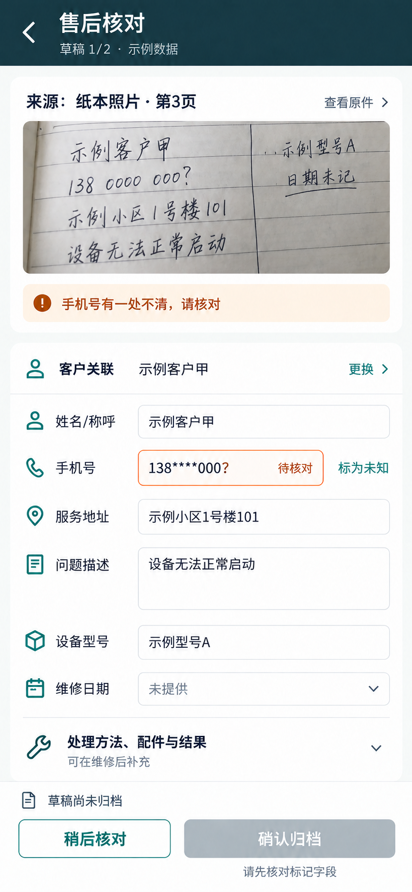
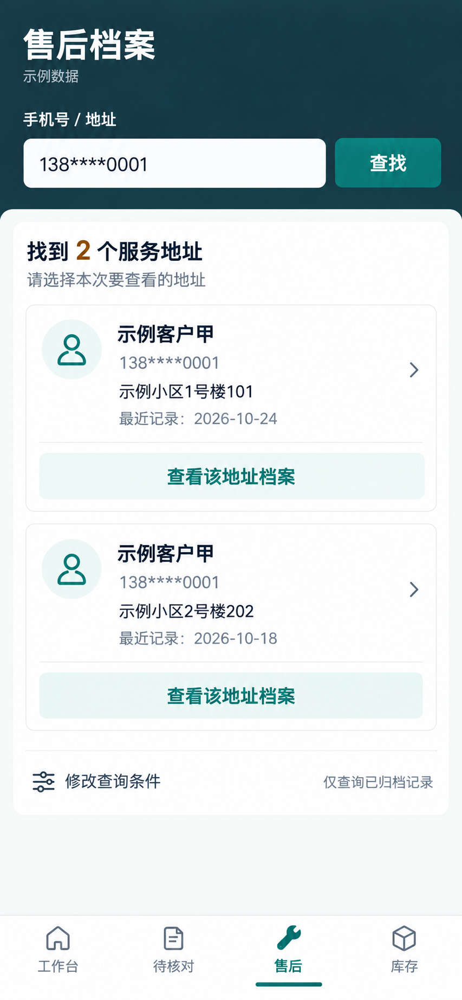
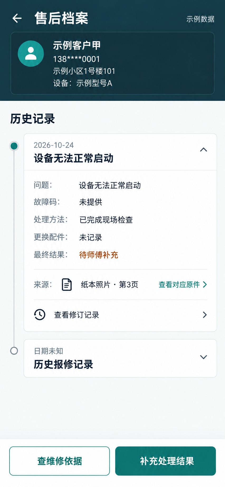
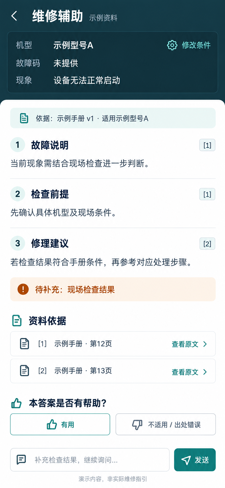
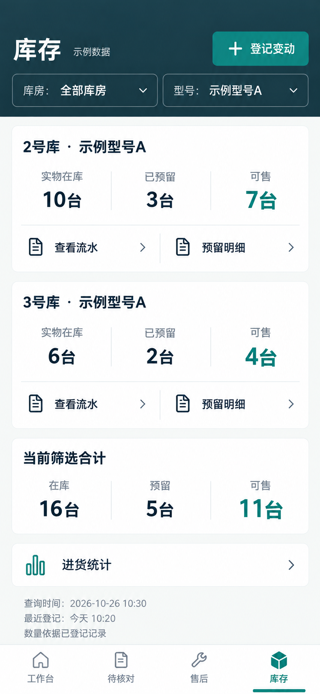
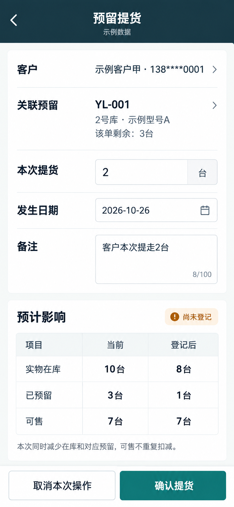
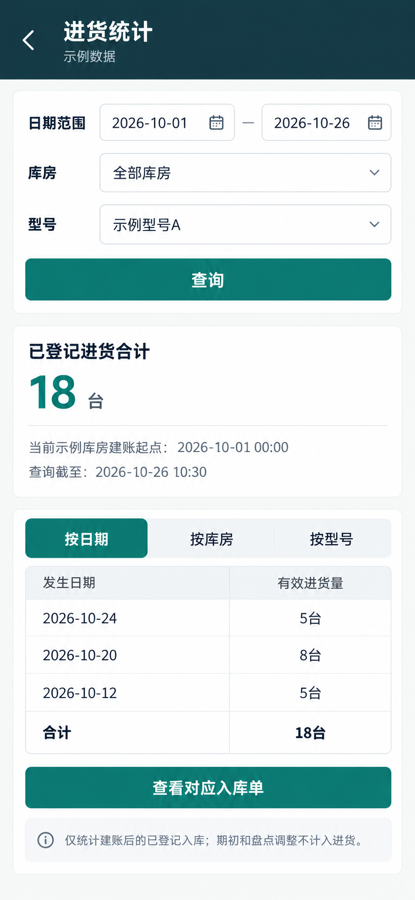

7 个核心页 · 概念效果图 · 示例数据 · 点击页面查看原图
页面说明 · 界面简报 · 复现提示词
对照纸本原件，核对模糊手机号；未核对时确认归档不可用。

同一手机号匹配两个地址，逐个展示候选，由接单人选择。

呈现历史记录、待补充结果、对应原件与修订入口。

建议旁附依据，保留检查前提、资料缺口和追问入口。

按库房和型号展示在库、预留、可售及筛选合计。

确认前预览数量影响：在库和预留各减 2，可售保持 7。

按日期统计有效进货，明确建账起点和统计范围。

整理日期：2026-10-28。图中样例日期保留为 2026-10-26。此图册展示静态概念图片，业务操作尚未实现。